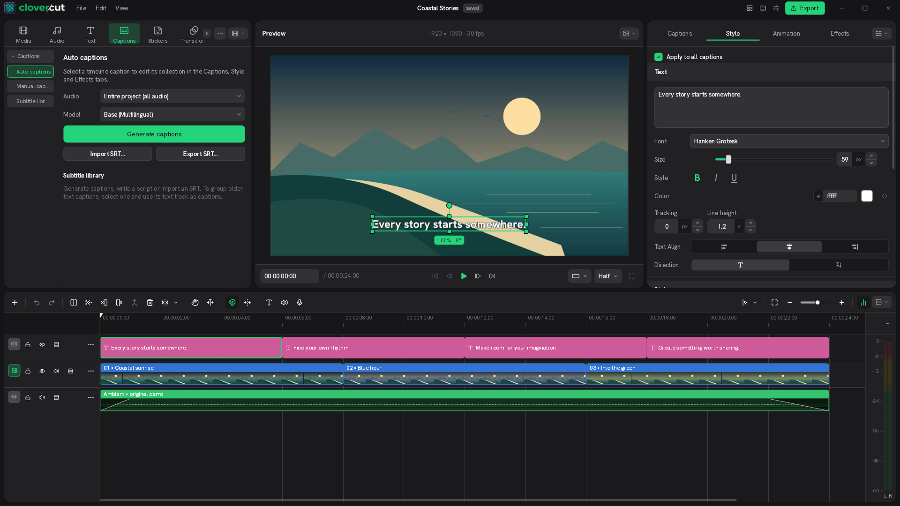

Reuse the edit, not just the media
Copy clips between projects with their effects and animation settings. Duplicate groups, build multiple timelines and use adjustment layers for a consistent look.
Built around keyboard and mouse, a multi-track timeline, and a full-size preview. clovercut runs locally on your desktop with local Whisper AI subtitles, direct GIPHY stickers, and a built-in CC0 music library, powered by a fast native Rust engine.
Local captions, searchable creative assets and reusable edits share one desktop workspace. Your projects stay on your computer; online libraries are optional.
Auto-generate synchronized subtitles right on your computer using OpenAI Whisper. It runs offline, keeping your audio private, and supports multiple languages with full styling and SRT export.
Search and drop animated stickers and GIFs directly onto your video timeline. Powered by GIPHY without needing to switch windows or download files to desktop.
Browse OpenGameArt and Freesound, preview audio and add it to your timeline. The new YouTube integration separates music and sound effects and preserves licences and credits. It currently requires the local companion API and a connected Studio session.
Interactive live tour: switches automatically or pick a tab below

A familiar desktop editor with local AI, integrated libraries and tools for reusing your work.
Copy clips between projects with their effects and animation settings. Duplicate groups, build multiple timelines and use adjustment layers for a consistent look.
Star effects, filters, stickers and transitions. Return to favourites, recent and most-used items, and preview transitions on hover before applying them.
Edit locally on Linux, Windows or macOS, generate captions on your device and export without a Clovercut watermark or subscription. The AGPL source is available to inspect and improve.
New in 0.1.6: compact tracks, cross-project clip reuse, an adaptive inspector and refreshed translations in 25 languages. Release packages are being prepared; current downloads remain on 0.1.5.
A native Rust engine, Slint interface and GPU compute shaders handle playback and effects. Performance depends on your media, effects and hardware.
Quick single track splitting right under the playhead without cutting unselected layers or losing timeline rhythm.
Real-time transitions, glitch effects, blurs, and color adjustments powered directly by GPU compute shaders.
Non-destructive color grading and effects stacked above video tracks with strict timeline constraints to keep your project organized.
Linux, Windows and macOS are the focus of our editing workflow and desktop releases. Mobile support is secondary, with its own feature set and release schedule.
Your media and voice data remain on your machine. Zero tracking, zero ads, and zero telemetry.
Choose a desktop package. Mobile builds are secondary and follow a separate release schedule.
Self-contained portable AppImage for Ubuntu, Arch, Fedora, Debian, and other distributions.
Setup installer with desktop shortcut or standalone portable ZIP.
Desktop packages for Apple Silicon and Intel Macs.
Mobile support is secondary. The previous Android 0.1.3 APK remains available separately; desktop features and releases take priority.